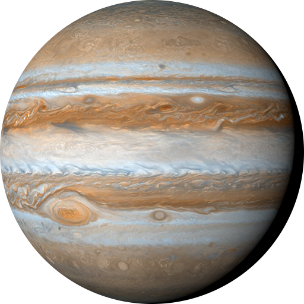
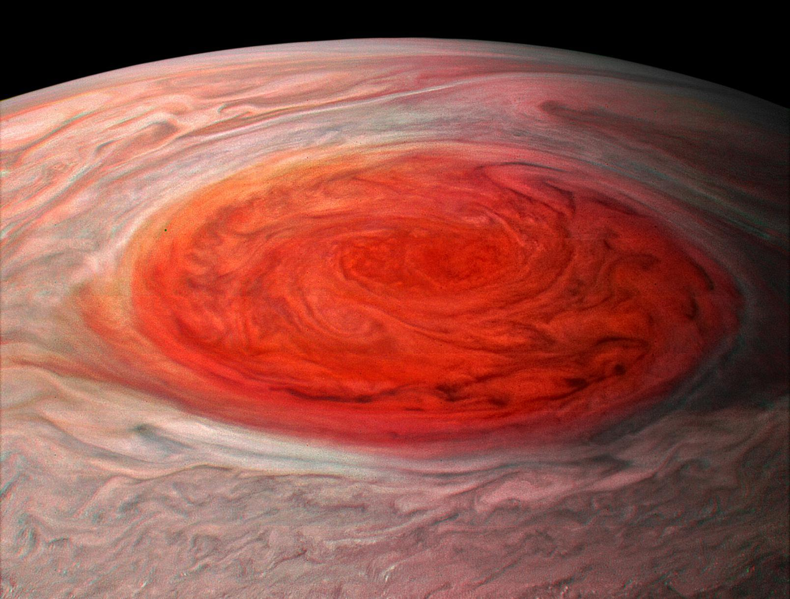

Jupiter's signature stripes and swirls are actually cold, windy clouds of ammonia and water, floating in an atmosphere of hydrogen and helium. The dark orange stripes are called belts, while the lighter bands are called zones, and they flow east and west in opposite directions. Jupiter's iconic Great Red Spot is a giant storm bigger than Earth that has raged for hundreds of years.

With a radius of 43,440.7 miles (69,911 kilometers), Jupiter is 11 times wider than Earth. If Earth were the size of a grape, Jupiter would be about as big as a basketball.
From an average distance of 484 million miles (778 million kilometers), Jupiter is 5.2 astronomical units away from the Sun. One astronomical unit (abbreviated as AU), is the distance from the Sun to Earth. From this distance, it takes sunlight 43 minutes to travel from the Sun to Jupiter.
Jupiter has the shortest day in the solar system. One day on Jupiter takes 9.9 hours (the time it takes for Jupiter to rotate or spin around once), and Jupiter makes a complete orbit around the Sun (a year in Jovian time) in about 12 Earth years (4,333 Earth days).
Its equator is tilted with respect to its orbital path around the Sun by just 3 degrees. This means Jupiter spins nearly upright and does not have seasons as extreme as other planets do.
The composition of Jupiter is similar to that of the Sun - mostly hydrogen and helium. Deep in the atmosphere, pressure and temperature increase, compressing the hydrogen gas into a liquid. This gives Jupiter the largest ocean in the solar system - an ocean made of hydrogen instead of water.
Jupiter has a solid core of heavier elements, but it is surrounded by a thick layer of liquid metallic hydrogen. The outermost layer is made of molecular hydrogen and helium. The planet's atmosphere is divided into several layers, with the uppermost layer containing clouds of ammonia crystals. Below that are clouds of ammonium hydrosulfide and water.
As a gas giant, Jupiter does not have a solid surface like the terrestrial planets. Instead, its atmosphere gradually becomes denser toward the center, where it transitions into a liquid state.
Jupiter has 79 known moons, the largest of which are the four Galilean moons: Io, Europa, Ganymede, and Callisto. Ganymede is the largest moon in the solar system, even bigger than the planet Mercury. These moons are of great interest to scientists because they may have subsurface oceans and the potential for life.
Jupiter has a faint ring system composed mainly of dust particles. The rings are not as prominent as Saturn's, but they are still an important feature of the planet. The main ring is made up of small, dark particles, while the halo and gossamer rings are made up of even smaller particles that are more diffuse.
Back to Solar System